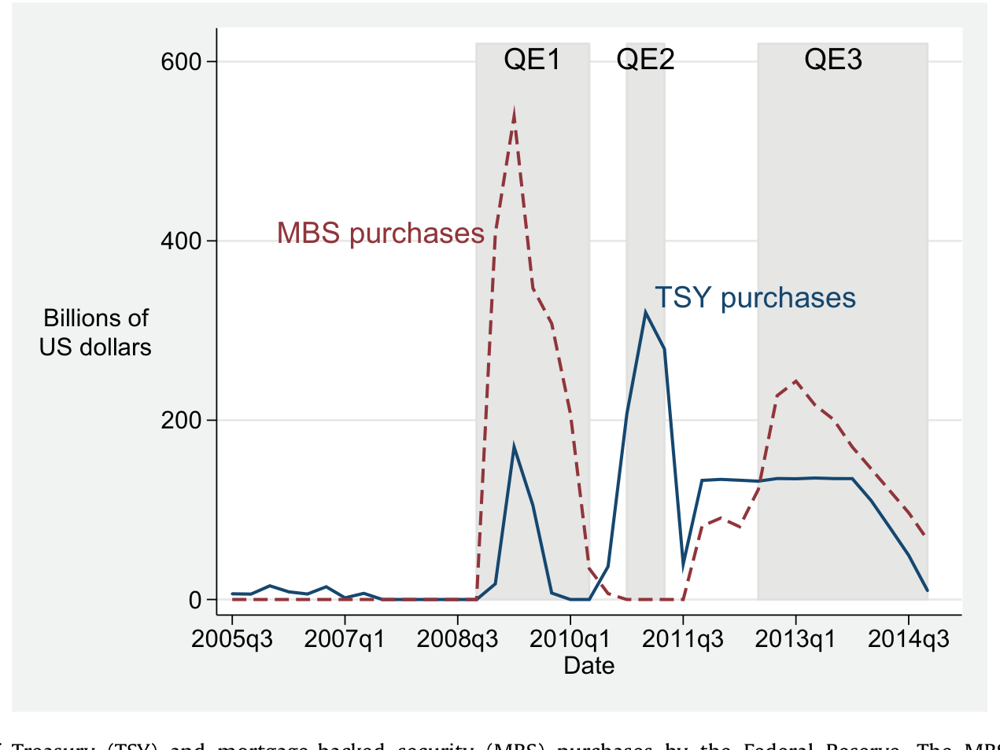
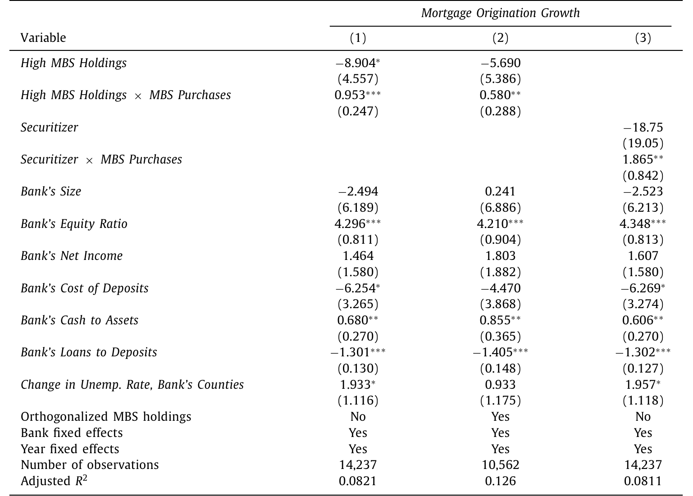
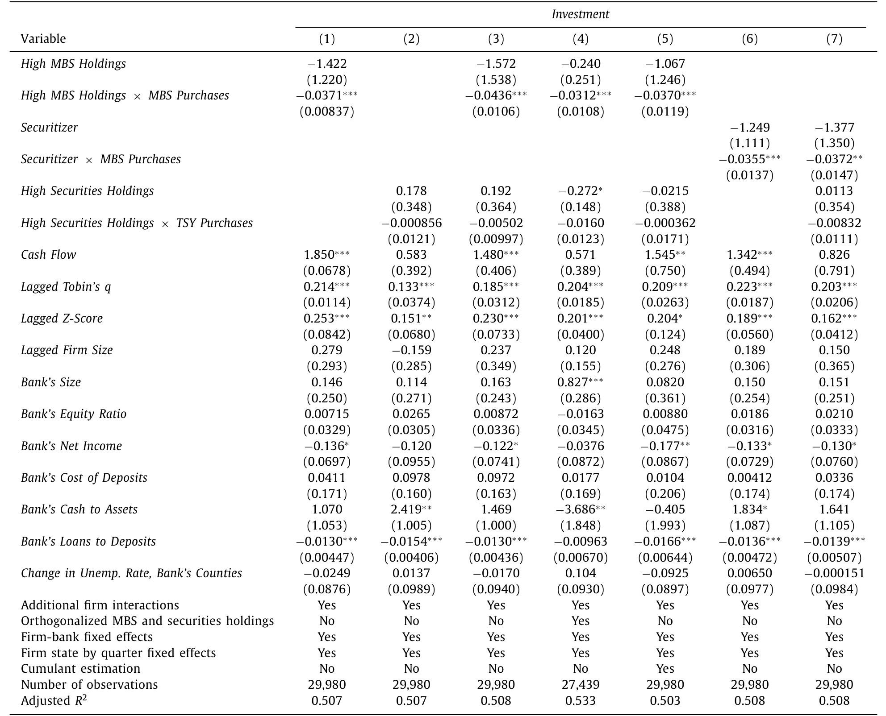
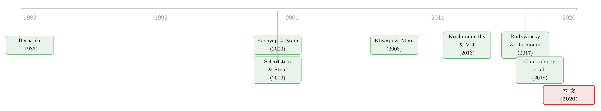

央行买债，关键不在「买多少」，而在「买什么」
本文读的是 Chakraborty, Goldstein & MacKinlay (2020, JFE)：美联储为量化宽松买入的两类资产——抵押贷款支持证券 (MBS) 和国债——在银行信贷渠道里走出了完全不同的两条路。受益于 MBS 购买的银行确实多放了按揭（每 1 美元 MBS 购买多放 3.63 美分按揭），但同时砍掉了工商业贷款（每 1 美元 MBS 购买少放 1.22 美分 C&I 贷款），与这些银行有借贷关系的企业随之削减了投资；国债购买则没有这种负面挤出。一句话：QE 不只是「放水」，它还在替经济决定水往哪里流。
1 一个被「总量」掩盖的问题
2008 年金融危机之后，各国央行手里的常规弹药——短端利率——很快打光了。于是它们掏出了一件非常规武器：量化宽松 (quantitative easing, QE)。逻辑听上去很直白：央行下场大举买入金融资产，压低收益率，抬高资产价格，改善持有这些资产的银行的资产负债表，于是银行有了更强的放贷能力和意愿，信贷扩张，经济复苏。美联储官员当年也正是这样向公众解释 QE 的（Yellen, 2012; Bernanke, 2012）。
这套故事里，银行是货币政策传导的关键一环——这就是经典的银行信贷渠道 (bank lending channel)。围绕「QE 到底有没有用」，学界和政策圈吵了很多年：有人说它救了经济，有人说它毫无作用，还有人担心它吹大了泡沫、扭曲了资源配置。
但绝大多数争论，盯着的是一个总量问题：QE 一共放了多少水，拉动了多少信贷。本文三位作者却问了一个更刁钻、也更被忽略的问题：
美联储买的不是「一种」资产，而是两种——MBS 和国债。这两类资产在银行信贷渠道里的作用，会一样吗？
这正是全文的张力所在。如果 QE 真的只是通过「抬高资产价格、改善银行净值」这一条路起作用，那么买 MBS 还是买国债，应该只是程度之差、并无方向之别。可一旦答案是「方向也不同」，那就意味着央行通过选择买什么资产，实际上在经济内部重新分配了信贷——这远远超出了「放水」本身。
2 两条渠道：资本利得 vs. 发起激励
要理解为什么 MBS 和国债会不一样，先得把银行信贷渠道拆成两条更细的传导路径。
第一条是资本利得渠道 (capital gains channel)。 大规模资产购买 (large-scale asset purchases, LSAPs) 压低收益率、抬高银行手中已持有资产的价格，银行净值变厚、约束放松，于是在多个领域都更愿意放贷。注意：这条渠道对 MBS 和国债是对称的——只要你持有得多，无论持有的是 MBS 还是国债，价格上涨都让你受益。
第二条，是一条少有人讨论、却恰恰是本文主角的渠道：发起激励渠道 (origination channel)。 它只对 MBS 成立，机制藏在一个技术细节里——美联储买 MBS，主要是通过待发行 (to-be-announced, TBA) 市场买的。
接着，一个自然的问题是：TBA 市场有什么特别？在这个市场上，买卖双方先就合约的六个参数（票息、期限、发行人、交割日、面值、价格）达成一致，而真正交割的那一篮子具体抵押贷款，要到交割日（通常是一到三个月之后）才确定（Gao et al., 2017）。换句话说，TBA 市场盯的是新增按揭。银行若想把贷款打包成机构 MBS 卖给美联储，就有强烈的动机去新发起、再证券化按揭——你资产负债表上那些陈年的旧 MBS、旧按揭，是不能拿去卖给美联储的。
于是关键的一步出现了：对那些活跃于二级按揭市场、做证券化的银行来说，MBS 购买不只是让它们「账面浮盈」，更是给了它们一个多做按揭生意的直接激励。而国债购买，给不了这个激励——持有国债的银行，只能享受资本利得，仅此而已。
这就是全文识别的「支点」：国债购买只有资本利得渠道，MBS 购买则同时有资本利得渠道和发起激励渠道。把两者放在一起比较，就相当于把「发起激励」这一条渠道单独拎了出来。
3 识别策略：让「谁更受影响」来说话
但真正棘手的，是因果识别。QE 推出之后经济发生的所有变化，都可能被归因于同一时期的其他冲击——危机本身、极低的利率、监管变化……怎么把 QE 的效果干净地剥离出来？
本文沿用了 Kashyap and Stein (2000) 的思路：利用银行之间的异质性。如果某些银行天然地比另一些银行更容易受这项政策影响，那么这两类银行在政策冲击后行为上的差异，就能说话。
具体怎么度量「受 MBS 影响的程度」？作者用了两个变量：
- MBS 持仓占总资产的比例。 因为在证券化的「换券交易 (swap transaction)」中，MBS 会作为一个中间环节出现在银行表上，所以持有 MBS 越多的银行，越可能活跃于二级市场。作者把 MBS 持仓最高的三分之一银行定为「最受影响」，最低的三分之一定为「最不受影响」。
- 证券化者 (Securitizers)。 在高 MBS 银行里，进一步挑出那些净证券化收入非零的银行——它们不仅和两房做交易，还证券化其他非机构贷款，二级市场参与度最深。值得注意的是：样本里 80% 以上的银行都报告了一些 MBS 持仓，但只有
3%的银行在某个时点报告过非零证券化收入。这个稀缺性，恰恰让「证券化者」成了一个很尖锐的处理组。
对应地，「受国债影响的程度」用银行表上国债及其他非 MBS 证券的数量来度量。
然后，是本文相较前人最关键的一处改进。它没有像很多研究那样，简单地用「QE 前/QE 后」的时间虚拟变量；而是直接把每个季度美联储实际购买的 MBS 金额、国债金额（取对数）作为货币刺激的强度变量，并加入季度固定效应 (quarter fixed effects)。其基准回归形如：
$$\Delta \text{Mortgage}_{b,t} = \alpha_b + \delta_t + \beta_1\,(\text{MBS Purchases}_t \times \text{High-MBS}_b) + \beta_2\,(\text{TSY Purchases}_t \times \text{High-TSY}_b) + \gamma' X_{b,t-1} + \varepsilon_{b,t}$$
这里 \(\alpha_b\) 是银行固定效应，\(\delta_t\) 是季度固定效应，\(X_{b,t-1}\) 是滞后的银行控制变量。读懂这个式子的窍门在于：因为 \(\text{MBS Purchases}_t\) 本身只随时间变化，它会被季度固定效应 \(\delta_t\) 完全吸收掉——真正识别系数的，是它与银行暴露度的交互项。这意味着，凡是当季影响所有银行的总体冲击（低利率、监管收紧、宏观周期……），都被 \(\delta_t\) 一并扫走了。\(\beta_1\) 捕捉的是「同一个季度里，高暴露银行相对低暴露银行多做了多少」。
这正是本文与最接近的同期论文 Rodnyansky and Darmouni (2017) 的分野。后者用三个 QE 轮次的时间虚拟变量作为唯一的外生变化来源，相当于假设危机期间唯一的总体变化就是这三轮 QE——于是 QE 的效果和同期一切其他政策（比如全程维持的极低利率）混在了一起，而且 MBS 与国债两类购买的刺激效果也没有被分开。本文用「逐季度购买量 + 季度固定效应」同时解决了这两个问题。
最后，还有一招对付「需求 vs. 供给」的诘问。你可能会担心：C&I 贷款和投资的下降，是不是因为企业不想借（需求下降），而非银行不愿贷（供给收缩）？作者祭出了 Khwaja and Mian (2008) 式的设计——找出那些同时向多家银行借款的企业，其中一些银行受 MBS 影响强、一些不受影响，然后加入企业×季度固定效应 (firm-time fixed effects)：
$$\text{Loan}_{f,b,t} = \alpha_b + \delta_{f,t} + \beta\,(\text{MBS Purchases}_t \times \text{High-MBS}_b) + \varepsilon_{f,b,t}$$
\(\delta_{f,t}\) 把「同一家企业在同一季度的全部借款需求」彻底吸收掉。剩下的 \(\beta\) 只能解释为：同一家企业、同一时点，从受影响银行拿到的贷款，相对从不受影响银行拿到的，少了多少。这就把供给侧的故事钉死了——需求再怎么变，对同一家企业的不同银行是一样的。
4 数据
本文的数据组合相当扎实，把「资产购买 → 银行 → 企业 → 实体投资」这条链完整地串了起来：
- HMDA（《住房抵押贷款披露法案》数据）：银行的按揭发起；
- Call Report（银行监管报表）：银行的商业贷款、资产负债表、各项暴露度；
- RateWatch：银行的 15 年期与 30 年期固定利率按揭报价（季度频率）；
- DealScan + Compustat：企业—银行借贷关系、企业投资等信息；
- 纽约联储：MBS 与国债的实际购买金额。
观测单位视回归而定（银行×季度、或企业×银行×季度），样本期为 2005 年第四季度至 2013 年第四季度——起点是有资产购买数据的最早季度，终点是各数据源能匹配上的最近季度。
下图把这段窗口里美联储的购买节奏画得一清二楚：QE1（2008Q4–2009Q3 以 MBS 为主）、QE2（2010Q3–2011Q3 几乎纯国债）、QE3（2012 年起 MBS 与国债混合），中间还夹着一段「卖短买长」的到期延展计划 (Maturity Extension Program, MEP)。三轮 QE 完成后，美联储资产负债表增加了约 $1.75 万亿 MBS 和 $1.68 万亿国债。正是这种「不同时期买不同资产」的节奏差异，给了作者识别所需的变化。

Figure 1: Quarterly totals of Treasury (TSY) and mortgage-backed security (MBS) purchases by the Federal Reserve. The MBS purchases include direct
5 主要结果：先是符合预期，然后是一次反转
第一步，符合预期的好消息。 在 MBS 购买之后，更暴露于 MBS 市场的银行，确实比不暴露的银行更多地增加了按揭发放。量级上：每 1 美元 MBS 购买，这些银行多放了 3.63 美分按揭。把它放到 $1.75 万亿的总购买规模上，意味着额外 $63.53 亿的按揭。这是一个令人安心的确认——美联储确实如其所愿，提高了按揭的吸引力，把暴露于该市场的银行往这门生意里「推」。

Table 2: reports the results. Because the growth rate is
接着，一个更出人意料的发现。 同样这批高暴露银行，在 MBS 购买之后放慢了它们的工商业贷款 (commercial and industrial, C&I lending)。这就是全文的反转：MBS 购买带来了一个负向的间接效应——挤出了那些并非政策直接瞄准的其他类型贷款。
量级一点都不小。每 1 美元额外的 MBS 购买，对应 C&I 贷款减少 1.22 美分；若换算成「每多放 1 美元按揭」，则对应商业贷款减少 34 美分。换句话说，QE 每在房地产市场多推出 1 块钱信贷，就有三分之一块钱从工商业信贷里被抽走。
然后，把链条拉到实体经济。 作者用 DealScan 和 Compustat 追踪与受影响银行有关系的企业，发现这些企业在 QE 之后不得不削减投资：每多放 1 美元按揭，企业投资减少 12 美分。而且——正如机制所预测的——这种收缩主要发生在财务约束更紧的企业身上。
但真正关键的一步，是国债的「对照实验」。 与 MBS 形成鲜明对比的是：国债购买没有对 C&I 贷款或企业投资产生负面效应，多数情形下要么为正、要么不显著。这一点至关重要：因为国债只有资本利得渠道在起作用。国债购买相对平淡的实体效果，恰恰说明——资本利得渠道本身相当微弱；MBS 那场挤出，主要不是资本利得在作祟，而是被那条「发起激励渠道」主导的。
6 机制：这不是巧合，是「内部资本市场」的老剧本
到这里，作者还得回答一个问题：凭什么相信挤出真的来自「发起激励」，而不是别的什么？文章给了几条彼此印证的证据。
其一，约束越紧，挤出越狠。 挤出效应在财务约束更紧的银行里更大，并且在经过 QE1 的那段时期最强——那正是整个银行业最受约束的时候。这与一个「替代效应」的逻辑高度吻合：银行的资源有限，当按揭这门生意突然变得格外诱人，资源就会从另一门生意（C&I 贷款）里被抽走。
其二，留下来的 C&I 贷款，盈利性更高了。 如果真是挤出，那么银行在收缩 C&I 贷款时，会优先砍掉边际上最不划算的，留下最赚钱的。数据正是如此：MBS 购买之后，这些银行新发放的商业贷款的盈利性上升了——这是「资源向最有吸引力的投资机会重新配置」的典型指纹。
这套逻辑，读过公司金融的人会觉得眼熟：它正是内部资本市场 (internal capital markets) 文献里的故事（Stein, 1997; Scharfstein and Stein, 2000）——受约束的主体会在各个部门之间腾挪资源，去追逐最好的投资机会。本文的银行，把「按揭部门」和「C&I 部门」当成了内部资本市场里的两个事业部。
更妙的是，这与作者自己此前的工作形成了一条完整的弧线。Chakraborty, Goldstein and MacKinlay (2018) 发现，在美国房地产繁荣期，处在火热房市里的银行减少了商业贷款、转向按揭，借款企业被迫减投资。本文则说：繁荣退潮之后，换了一种力量（QE 的 MBS 购买）继续在挤出企业的资本。（关于 QE 如何从另一个角度——准备金「占地方」——反手挤掉银行贷款，可参见《央行印的不是钱，是「占地方」的准备金》；而国债供给如何挤占 MBS 做市能力，则可参见《一张资产负债表，两个市场》。）

Table 6: reports the results. In Column 1, the coefficient
作者还堵住了几个旁路：企业并没有从股权市场或非银债务等其他渠道拿到足够的替代资金——也就是说，这笔被抽走的信贷，确实变成了企业实打实少做的投资，而不是换了个口袋。
7 文献脉络
把镜头拉远，这篇论文站在好几条研究脉络的交汇处。
最早的源头，是银行信贷渠道本身。Bernanke (1983) 在研究大萧条时指出，金融中介的崩溃如何通过切断信贷放大了实体冲击；此后 Kashyap and Stein (1995, 2000)、Stein (1998)、Peek and Rosengren (1995) 把「利用银行异质性来识别货币政策的信贷渠道」这套方法论打磨成熟——本文的识别策略，正是这一传统的直系后裔。

第二条线，是内部资本市场与挤出。Stein (1997)、Scharfstein and Stein (2000) 刻画了多部门主体如何在内部腾挪资源、以及由此产生的扭曲；Farhi and Tirole (2012) 给出了理论，Chakraborty et al. (2018) 提供了房地产繁荣期的实证。本文把这套「挤出」逻辑搬到了 QE 的语境里。
第三条线，是新兴的 QE 与银行信贷文献。最接近的是 Rodnyansky and Darmouni (2017)，同样利用 MBS 持仓的异质性，但聚焦按揭、用 QE 轮次时间虚拟变量识别，因而没能识别出本文揭示的 C&I 挤出。与之互补的还有 Di Maggio et al. (2016)（QE 的再融资渠道）、Kandrac and Schulsche (2016)（准备金与风险承担）、Foley-Fisher et al. (2016)（MEP 与长期债依赖型企业的融资）。更上游，则是 QE 对资产价格影响的研究 Krishnamurthy and Vissing-Jørgensen (2011, 2013)、Hanson and Stein (2015)。
而本文的方法论里，那记「企业×季度固定效应」的杀招，要追溯到 Khwaja and Mian (2008)——把借款人需求一次性吸收掉、从而干净识别信贷供给的经典设计。
本文所处的位置因此很清楚：它不是又一篇「QE 有没有用」的总量评估，而是第一篇把 「买什么资产」 这件事，通过发起激励渠道与真实的企业投资连起来、并给出反向挤出证据的论文。
评论与延伸（Q&A + 研究方向）
(a) 几个可能的疑问
Q：高 MBS 持仓的银行和「积极证券化」的银行混在一起，会不会把两种机制搅在一块？
会，作者自己也坦承这一点。理想情况下应当把「只享受 MBS 资本利得」的银行和「同时受发起激励驱动」的银行彻底分开，但资产负债表数据做不到完全切分——很多高 MBS 银行可能是活跃的发起者却不参与证券化。所以作者退而求其次：用「证券化者」这个只占
3%的尖锐子样本来逼近发起激励，再用国债暴露度（只有资本利得机制）作为对照组。结论的可信度，很大程度上压在这个「MBS vs. 国债」的对比上。
Q：C&I 贷款下降，凭什么不是企业自己不想借了（需求侧）？
这是最致命的诘问，作者用企业×季度固定效应正面回应。对同时向多家银行借款的企业，控制住企业当季的全部需求后，它从受影响银行拿到的贷款相对不受影响银行仍然下降——需求侧故事无法解释「同一企业、同一时点、不同银行」的差异。此外，企业也没能从股权或非银渠道补上这笔缺口，说明这是真实的供给收缩。
Q：和 Rodnyansky-Darmouni (2017) 到底差在哪，为什么人家没发现挤出？
三处差别。一是识别：他们只用三个 QE 时间虚拟变量，把 QE 与同期一切政策（尤其是全程低利率）混在一起，本文用逐季度购买量 + 季度固定效应剥离了总体冲击。二是资产分类：他们没把 MBS 和国债分开，而本文显示国债购买反而可能提高 C&I 贷款——他们的结果里可能掺进了国债的正效应，从而抵消了 MBS 的负效应。三是落点：他们只看银行的总体放贷模式，本文一路追到企业投资和银行—企业层面的借贷关系，看的是 QE 真正的实体效果。
Q：为什么国债购买几乎没有实体效果？这是不是说 QE 总体上没用？
不能这么推。国债购买没有负面挤出，是因为它只有资本利得渠道，而本文证据表明资本利得渠道本身就很弱。这反过来说明：MBS 那场强烈的（既有正向按揭、又有负向挤出的）反应，主要由发起激励渠道驱动。结论不是「QE 没用」，而是「QE 的作用高度依赖于买什么资产」——买 MBS 会定向激活房地产信贷并挤出企业信贷，买国债则两头都不太动。
Q：每多放 1 美元按揭挤出 34 美分 C&I、12 美分投资——这算大还是小？
量级相当可观。三分之一的按揭增量是以商业信贷的等额收缩为代价换来的；而企业投资 12 美分的下降，意味着 QE 在房地产端的「刺激」，有一部分是从企业部门的实体投资里平移过去的。这正是作者所谓的「非预期的真实效果 (unintended real effects)」——总量上看似中性甚至正面的政策，在结构上重新切了蛋糕。
Q：这对其他国家的 QE 有什么含义？
含义很直接：资产选择即政策。欧洲央行买的是公司债，日本央行甚至买股票——按本文逻辑，每一种资产都可能激活一条特有的「发起/配置激励」渠道，产生各自的结构性副作用。央行在决定 QE 规模之前，更该想清楚自己买的那类资产，会把信贷往哪个方向「拧」。
(b) 几个可能的研究问题与提案
1. QE 的「发起激励渠道」在公司债市场会留下什么印记？
【经济故事】欧央行的企业部门购买计划 (CSPP) 直接买入公司债。类比本文：活跃于债券承销/做市的银行，会不会被激励去多发起合资格公司债、而挤出对不合资格企业（中小、非投资级）的贷款？这是把「发起激励 → 挤出」的逻辑从按揭平移到信用市场。 【可行性】中。需要 ECB 购买明细 + 银行层面承销数据（Dealogic）+ AnaCredit 贷款层面数据。识别可沿用本文「合资格暴露度 × 季度购买量 + 季度/企业×时间固定效应」，doable，但 AnaCredit 的可得性是主要障碍。
2. 外资持有人是这场挤出的「缓冲垫」还是「放大器」？
【经济故事】当本土银行因 MBS 购买收缩 C&I 贷款时，那些被挤出的企业能否转向外资银行或外资债券投资者融资？如果外资持有人填补了缺口，挤出的实体后果会被削弱；若外资同样顺周期撤离，则会被放大。 【可行性】中。需要 DealScan/债券持有人层面的国籍信息 + 本文的银行暴露度框架。识别可做「受影响企业 × 外资可得性」的交互。难点在于干净度量企业层面的外资融资可得性。
3. MBS 购买挤出 C&I 贷款，是否进一步传导到了公司债的二级市场流动性？
【经济故事】被挤出银行信贷的企业若转向发债，可能改变其债券的投资者结构与流动性；而做市商若同时是受影响银行，其资产负债表腾挪也可能改变它们对公司债的做市能力。这条线把信贷挤出和债券流动性连起来。 【可行性】中偏低。需要 TRACE 债券交易 + 做市商身份 + 银行暴露度的匹配。识别较复杂，传导链条长、混杂因素多，需要非常小心地分离机制。
4. 把「证券化者」这个 3% 的尖锐子样本做成连续的处理强度。
【经济故事】本文用「是否有非零证券化收入」这个 0/1 划分。若能用证券化收入/规模构造连续的发起激励强度，就能检验剂量—反应关系，让发起激励渠道的识别更扎实。 【可行性】高。所需数据（Call Report 证券化收入）本文已在用，纯属对现有设计的精化，doable。
我的判断
贡献。 这篇论文最漂亮的地方，在于它把一个被「总量评估」长期忽略的维度——央行买什么资产——变成了一个可识别的因果问题，并一路追到了企业投资这一真实变量上。它的核心洞见值得反复咀嚼：QE 不是一台中性的「印钞机」，而是一只有方向的手；通过选择购买 MBS，美联储在定向催肥房地产信贷的同时，从企业部门的资本里抽了血。「逐季度购买量 + 季度固定效应 + 企业×季度固定效应」这套组合拳，相比用 QE 轮次虚拟变量的做法是一次实质的方法论升级，也正是它能看到 Rodnyansky-Darmouni 看不到的挤出的原因。
对识别的担忧。 我最大的保留，仍在于「MBS 暴露度」这个处理变量本身不够干净——高 MBS 持仓既可能反映发起激励，也可能只反映被动持有，作者也承认无法在资产负债表上彻底切分。整套结论因此高度依赖「MBS vs. 国债」这个对照的有效性；而 MBS 暴露的银行与国债暴露的银行，在商业模式、客户结构、地域上很可能系统性不同，季度固定效应能扫掉总体冲击，却扫不掉这种横截面的异质趋势。此外，TBA 市场的发起激励是一个相当精巧的机制假设，文中是用「约束越紧挤出越狠」「留存贷款盈利性上升」等间接证据来支撑的——有说服力，但仍是间接的。
后续想看到什么。 我会想看：把发起激励做成连续的剂量—反应；把这条逻辑搬到 CSPP/公司债语境检验外部效度；以及——最贴近我自己关心的方向——被挤出银行信贷的企业，究竟转向了哪里，外资持有人和债券市场流动性在其中扮演了缓冲还是放大的角色。如果这条传导链能被打通，那么本文「资产选择即信贷再分配」的故事，就能从按揭—企业，延伸成一张覆盖整个信用市场的网。
参考文献
Bernanke, B. S. (1983). Nonmonetary effects of the financial crisis in the propagation of the Great Depression. American Economic Review 73(3), 257–276.
Chakraborty, I., Goldstein, I., & MacKinlay, A. (2018). Housing price booms and crowding-out effects in bank lending. Review of Financial Studies 31(7), 2806–2853.
Chakraborty, I., Goldstein, I., & MacKinlay, A. (2020). Monetary stimulus and bank lending. Journal of Financial Economics 136(1), 189–218.
Di Maggio, M., Kermani, A., & Palmer, C. (2016). How quantitative easing works: Evidence on the refinancing channel. NBER Working Paper 22638.
Farhi, E., & Tirole, J. (2012). Bubbly liquidity. Review of Economic Studies 79(2), 678–706.
Foley-Fisher, N., Ramcharan, R., & Yu, E. (2016). The impact of unconventional monetary policy on firm financing constraints: Evidence from the maturity extension program. Journal of Financial Economics 122(2), 409–429.
Gao, P., Schultz, P., & Song, Z. (2017). Liquidity in a market for unique assets: Specified pool and to-be-announced trading in the mortgage-backed securities market. Journal of Finance (forthcoming/working).
Kashyap, A. K., & Stein, J. C. (1995). The impact of monetary policy on bank balance sheets. Carnegie-Rochester Conference Series on Public Policy 42, 151–195.
Kashyap, A. K., & Stein, J. C. (2000). What do a million observations on banks say about the transmission of monetary policy? American Economic Review 90(3), 407–428.
Khwaja, A. I., & Mian, A. (2008). Tracing the impact of bank liquidity shocks: Evidence from an emerging market. American Economic Review 98(4), 1413–1442.
Krishnamurthy, A., & Vissing-Jørgensen, A. (2011). The effects of quantitative easing on long-term interest rates. Brookings Papers on Economic Activity (Fall), 215–265.
Krishnamurthy, A., & Vissing-Jørgensen, A. (2013). The ins and outs of LSAPs. Proceedings of the Kansas City Federal Reserve Symposium, 57–111.
Peek, J., & Rosengren, E. S. (1995). Bank lending and the transmission of monetary policy. Federal Reserve Bank of Boston Conference Series 39, 47–68.
Rodnyansky, A., & Darmouni, O. M. (2017). The effects of quantitative easing on bank lending behavior. Review of Financial Studies 30(11), 3858–3887.
Scharfstein, D. S., & Stein, J. C. (2000). The dark side of internal capital markets: Divisional rent-seeking and inefficient investment. Journal of Finance 55(6), 2537–2564.
Stein, J. C. (1997). Internal capital markets and the competition for corporate resources. Journal of Finance 52(1), 111–133.
Stein, J. C. (1998). An adverse-selection model of bank asset and liability management with implications for the transmission of monetary policy. RAND Journal of Economics 29(3), 466–486.